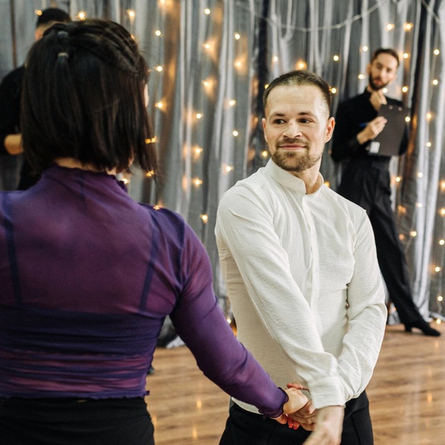
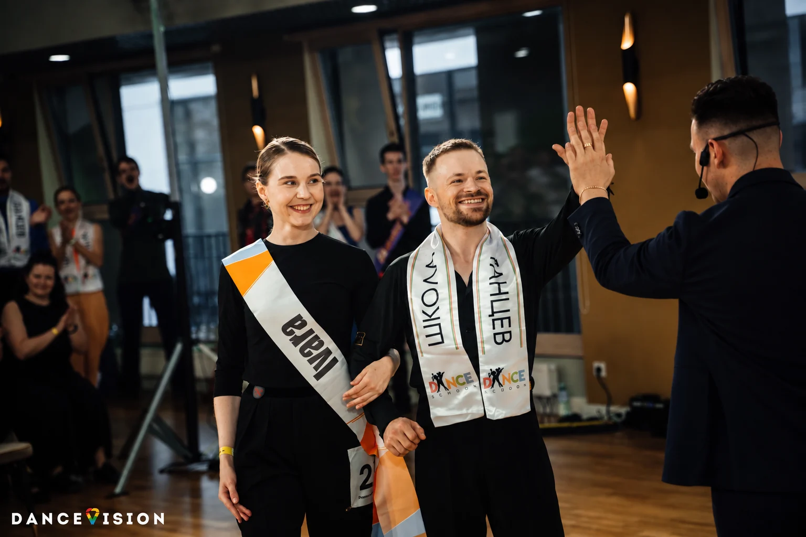
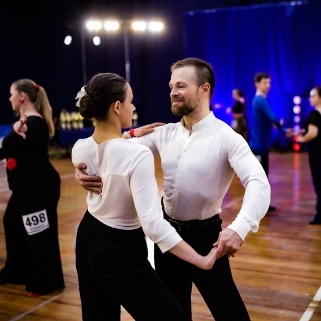

Научиться танцевать хастл
Разобраться в базовых шагах, контакте и ведении — в своём темпе и без необходимости догонять группу.
Занятия хастлом в Москве
Если вы хотите научиться танцевать хастл, можно начать с индивидуального занятия и двигаться в своём темпе — с нуля, после обучения в группе или с конкретной целью: первым турниром, свадебным танцем, съёмкой видео.

Павел
тренер по хастлу
Обо мне

Москва · турниры АСХЯ занимаюсь хастлом с 2021 года, а преподаю с 2023-го. Мой спортивный класс — Main по DnD и C по классике.
Преподавал хастл студентам в зимнем лагере МГУ и участникам благотворительного проекта для людей с онкологическими заболеваниями. Регулярно участвую как про в проекте Pro-Sampo и даю индивидуальные уроки.
Я регулярно выступаю на турнирах, продолжаю тренироваться и повышать своё мастерство. Для меня преподавание неотделимо от собственной практики: новый опыт с тренировок и соревнований постепенно становится частью работы с учениками.
На занятии мы работаем сразу с двумя сторонами танца. Снаружи я вижу позиции, линии и осанку. В паре чувствую качество взаимодействия, ведомость и раму. Так можно не просто выучить движение, а понять, почему оно получается или не получается.
С чем приходят на занятия
Обучение хастлу в Москве может начинаться с любой точки: кто-то приходит совсем без опыта, кто-то хочет закрыть пробелы после групповых занятий, а кто-то готовится к турниру или постановочному видео.
Разобраться в базовых шагах, контакте и ведении — в своём темпе и без необходимости догонять группу.
Разобрать то, что не получается на групповых занятиях, и получить понятные упражнения для самостоятельной практики.
Подготовиться к первому старту: техника, взаимодействие в паре, музыкальность и поведение на площадке.
Поставить танец под выбранную музыку, отработать его и получить результат, которым захочется поделиться.
Сделать номер, который подходит именно вашей паре, музыке, площадке и срокам подготовки.
Реальный результат новичков
Январь 2023 года, зимний лагерь МГУ. Студенты показывают заранее подготовленную связку после двух–трёх групповых занятий. Обучение хастлу с нуля может выглядеть именно так: уже на первом занятии ученики танцуют в паре, слушают музыку и получают удовольствие от танца.
Это не показательное выступление опытных танцоров, а честный пример первых шагов: уже можно двигаться в паре, слышать музыку и получать удовольствие от того, что начало получаться.
Не только движения под музыку
Польза занятий танцами не сводится к одному эффекту. В хастле соединяются физическая нагрузка, работа внимания, общение и удовольствие от музыки — поэтому он может оставаться частью жизни годами.
Танцы могут стать необходимой для здоровья физической активностью. Меняются музыка, партнёры и задачи, поэтому тренировки не ощущаются одинаковыми и меньше рискуют надоесть.
На занятиях и вечеринках встречаются знакомые и новые люди. Общая тема уже есть, а начать разговор проще: достаточно пригласить человека на танец.
На танцевальной вечеринке не нужно придумывать, чем заняться. Музыка, движение и смена партнёров сами создают события вечера — алкоголь для этого не требуется.
Даже под одну композицию невозможно дважды станцевать совершенно одинаково. Другая музыка, настроение и реакция партнёра каждый раз немного меняют движения.
Парный танец учит спокойно взаимодействовать с человеком противоположного пола: приглашать, принимать отказ, слышать согласие и уважать личные границы. Постепенно лишняя стеснительность уходит.
Для тактильных людей танец может отчасти восполнять нехватку обычного человеческого прикосновения. Здесь контакт понятен, ограничен правилами танца и всегда основан на взаимном комфорте.
Нужно помнить движения, держать ритм, управлять телом и одновременно реагировать на партнёра. Такая сложнокоординационная нагрузка развивает память, внимание и координацию, поддерживает здоровье мозга и помогает снижать риск возрастного когнитивного снижения и деменции, включая болезнь Альцгеймера. А техническая работа над позициями и линиями постепенно делает осанку более красивой и собранной.
Если вы только знакомитесь

Хастл — современный парный танец, который можно танцевать почти под любую популярную музыку. Он впитал элементы западного свинга, бальной и латиноамериканской техники, но не привязан к одному музыкальному стилю или настроению. Один танец может быть лёгким и дружеским, другой — драматичным или чувственным. Поэтому хастл подходит и для вечеринки, и для сцены, и для спортивной площадки.
У него есть живая социальная сторона. Летом танцоров можно увидеть в Парке Горького на Пушкинской набережной, круглый год — на вечеринках в московских школах и заведениях. Туда приходят общаться, знакомиться, слушать музыку и танцевать с разными людьми. Парный танец при этом не обязан иметь романтический подтекст: среди знакомых мне танцоров были, например, мать и взрослый сын. Возраст и предыдущий опыт здесь не являются входным билетом — начинать можно взрослым и без какой-либо танцевальной подготовки.
Танцы дают нагрузку, которая не успевает наскучить: пока тело работает, голова занята музыкой, координацией и партнёром.
Есть и спортивный хастл: турниры, рейтинговые баллы и волнение перед выходом на площадку. Многие девушки, особенно в старших классах, выходят в своих самых красивых платьях — часто сшитых по индивидуальному заказу, — готовят эффектные причёски и макияж почти как профессиональные актрисы перед сценой. Это не обязательное условие: во многих номинациях можно выступать в обычном тренировочном костюме. Но продуманный образ помогает зарядиться настроением, почувствовать себя увереннее и легче войти в характер танца.
В дисциплине партнёр определяется жеребьёвкой, музыка заранее неизвестна — важны импровизация и умение договориться без слов. В постоянная пара готовит программу заранее. Спорт необязателен, но он даёт ясную цель и учит дисциплине: иногда движение начинает получаться только после сотен и тысяч внимательных повторений.
Ещё одна важная вещь — контакт. В парном танце мы учимся замечать другого человека и ясно передавать намерение без слов. Прикосновение и совместное движение дают естественное удовольствие, но границы и комфорт обоих партнёров всегда остаются основой общения.
Хастл ДнД (формат Jack & Jill) — турнирная дисциплина, в которой пары составляются случайно, а музыка становится известна только на площадке. Класс показывает соревновательный уровень танцора: Павел выступает в Main.
Классика — спортивная дисциплина для постоянной пары. Танцоры заранее готовят хореографию, образ и музыку либо танцуют программу по правилам турнира. Класс Павла — C.
Саппорт приходит на индивидуальный урок, чтобы ученику было с кем танцевать. Это может быть знакомый танцор или специально приглашённый партнёр.
Сампо — сокращение от «самоподготовка»: формат, при котором танцор оплачивает доступ в зал и практикуется без группового занятия.
Как это выглядит
Импровизация, турнир
и постановочная работа
Стоимость
Занятия проходят в танцевальных залах Москвы. Аренду зала клиент оплачивает за себя и за тренера.
Исключение — зал на Образцова, 14: там у меня оплачено сампо, поэтому клиент оплачивает аренду только за себя.
Можем работать в паре — тогда я обучаю «изнутри». Если вы приходите со своим партнёром или саппортом, я наблюдаю и корректирую со стороны.
Нужна партнёрша или девушка-саппорт. Если её нет, я помогу найти девушку-тренера: она работает с вами в паре, а я — снаружи.
Напишите, какой у вас опыт и чего хочется добиться. Договоримся о месте и времени.